Somna Guide – Der ultimative Kayla-Konter in Hero Wars Alliance
- By: Alexandre Domingos. .
In einer Meta, die von der überwältigenden Stärke von Kayla dominiert wird, ist es entscheidend, wirksame Konter zu finden. Hier kommt Somna, eine Kontrollspezialistin, die sich darauf versteht, schadensstarke Helden durch Schlaf, Debuffs und Verwandlungen auszuschalten – eine der effektivsten Konter gegen Kayla.
In Kombination mit Lian – bereits bekannt als starke Anti-Kayla-Heldin – erschafft Somna ein Albtraumszenario für Kayla-basierte Teams. Dieser Guide deckt alles ab, was du über den strategischen Einsatz von Somna in Hero Wars Alliance wissen musst: ihre Rolle, Synergien, wie du sie bekommst und warum sie ein Muss gegen den stärksten Helden im Spiel ist.
Sieh dir unten das vollständige Video über Somna an: Die WAHRHEIT über Somnas Schlaf- und Stillekräfte. Die technische Zusammenfassung und die Statistiktabellen stehen direkt nach dem Video.

▶ Dieses Video auf YouTube ansehen
📋 Somna Guide – Inhaltsverzeichnis
Wer ist Somna?
Somna ist eine Kontrollheldin in der mittleren Reihe aus der Fraktion Weg des Mysteriums. Ihre beweglichkeitsbasierten Fähigkeiten reduzieren physischen Schaden, unterdrücken Rüstungsdurchschlag und verwandeln Gegner sogar in Schafe – was sie zu einer taktischen Macht gegen Burst-Gegner wie Kayla macht.

- Glyphenklasse: Kontrolle
- Position: Mittlere Reihe
- Hauptattribut: Beweglichkeit
- Fraktion: Weg des Mysteriums
- Wie man Seelensteine erhält: Spezialevents, Realm
- Synergie: Lian, Satori, Folio
- Hydra-Rangliste: C
Auch wenn Somna in der Hydra nicht hoch rankt, ist ihr Kontroll-Toolkit im PvP verheerend. Gegen Kayla-lastige Teams glänzt sie – besonders im Team mit Lian, um aggressive Frontlinien lahmzulegen und Burst-Ketten zu stoppen, bevor sie beginnen. Der neue Astral-Skin+ steigert ihren Wert in der späten Arena und im Gildenkrieg noch weiter, denn der Sprung von 10.650 auf 21.300 Rüstungsdurchschlag hilft ihren physischen Angriffen, gepanzerte Ziele zu bestrafen, anstatt sie nur zu kontrollieren.
Wenn Kayla dir in Hero Wars Alliance Probleme bereitet, könnte ein Aufbau um Somna die Antwort sein, nach der du gesucht hast.
Somna Gesamtbewertung in der Meta
Diese Kurzbewertung fasst zusammen, wie Somna in der aktuellen Hero Wars Alliance Meta abschneidet – basierend auf Kontrollwert, Schadensdruck, Teamsynergie und wie sehr sie auf Verbündete angewiesen ist.
Somna Vor- und Nachteile – Hero Wars Alliance
✅ Vorteile
- Hervorragende Massenkontrolle mit Schlafeffekten, die feindliche Hinterreihen stören.
- Synergie mit Helden wie Lian, Satori und Folio, die von handlungsunfähigen oder schlafenden Gegnern profitieren.
- Ihr Waffenartefakt erhöht den gesamten ausgehenden Schaden an Gegnern mit niedrigem Leben, indem es Bonus-Vernichtung gewährt, wenn Gegner dem Tod nahe sind.
- Kann den Kampfverlauf wenden, wenn sie mit starken Heilern wie Guus kombiniert wird.
- Magiebasierte Heldin, effektiv gegen physisch starke Teams mit schwacher Magieabwehr.
❌ Nachteile
- Gegner wachen beim Treffer aus dem Schlaf auf, was sorgfältige Teamkoordination erfordert, um die Massenkontrolle zu maximieren.
- Hat derzeit nur einen Talisman, was ihre Build-Flexibilität bis zu künftigen Updates einschränkt.
- Geringe Widerstandsfähigkeit – benötigt Schutz oder Heilungsunterstützung, um längere Kämpfe zu überleben.
- Abhängig von Synergien: funktioniert deutlich besser in Kombiteams als allein.
Somna Legendäre Relikt-Fähigkeiten Upgrade-Priorität – Hero Wars Alliance
Relikte verstärken Somna mit verheerenden Massenkontroll-Upgrades und verwandeln ihre Schlaf- und Schaf-Mechaniken in eine teamdefinierende Strategie. Neben Fähigkeitsverbesserungen steigern Relikte auch ihren Physischen Angriff und ihre Gesundheit, die ihre Debuff- und Schadensformeln direkt skalieren. Wenn du mehr darüber erfahren möchtest, wie Relikte funktionieren, schau dir unseren vollständigen Relikt-Guide an.
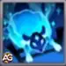
1. – Lullaby Veil (Wiegenlieds Schleier)
Dies ist Somnas Kernfähigkeit. Sie versetzt jeden Gegner für 7 Sekunden in Schlaf und zwingt sie aus dem Kampf. Wenn sie aufwachen, erhalten sie den Schläfrigkeit-Effekt, der ihren physischen Schaden für 10 Sekunden senkt. Gegner können bis zu 3 Stapel gleichzeitig haben. Diese Fähigkeit ist der Grund, warum Somna das gesamte Schlachtfeld kontrollieren kann – das macht sie zum höchsten Upgrade-Priorität.
Fähigkeitsinfo
- Formel Reduzierung physischen Schadens pro Stapel: (25% Physischer Angriff + 3.000)
- Schlüsselwörter: Debuff, Schlaf, Kontrolle
- Animationsverzögerung: 1 Sekunde
- Dauer: 7 Sekunden
- Bereich: 3
- Reichweite: 3000
- Treffer: 10
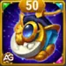
Formel mit Talisman des Schlummers
- Formel 1: Physische Schadensreduzierung pro Stapel: 35,689.5 (25% × 130,758 + 3,000)
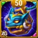
Formel mit Talisman des Vergessens
- Formel 1: Physische Schadensreduzierung pro Stapel: 37,489.5 (25% × 137,958 + 3,000)
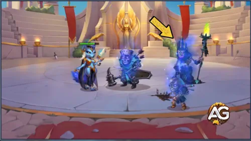
Entwicklungspriorität: Sehr hoch – Die ultimative Massenkontrolle, die alle Gegner ausschaltet und ihr gesamtes Kit ermöglicht.
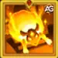
1. – Lullaby Veil (Verbesserte Fähigkeit) Legendäres Relikt: Stufe 10
Dieses Upgrade verstärkt den Schlafeffekt noch weiter. Wenn Gegner durch Schaden geweckt werden, erhalten sie sofort 3 Stapel Schläfrigkeit. Die maximalen Stapel werden ebenfalls auf 10 erhöht, sodass ihr Team Gegner extrem geschwächt halten kann. Es sorgt dafür, dass ihre beste Fähigkeit auch im Spätspiel noch besser skaliert.
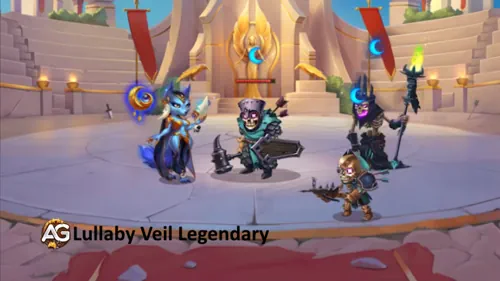
Entwicklungspriorität: Sehr hoch – Verstärkt ihr stärkstes Kontrollwerkzeug und stellt sicher, dass Gegner länger geschwächt bleiben.
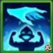
2. – Drowsy Blessing (Schläfriger Segen)
Diese Fähigkeit lässt Somnas vorderen Verbündeten bei jedem Treffer Schläfrigkeit verbreiten – 12 Sekunden lang. Mysterium-Helden behalten es noch länger. Schläfrigkeit senkt sowohl physischen Schaden als auch Rüstungsdurchschlag, wodurch Gegner mit jedem Angriff schwächer werden. Es ist nicht so spektakulär wie Schlaf, stellt aber sicher, dass der Debuff im Kampf immer aktiv ist.
Fähigkeitsinfo
- Anfangs-Abklingzeit: 5 Sekunden
- Abklingzeit: 20 Sekunden
- Animationsverzögerung: 1 Sekunde
- Dauer: 12 Sekunden
- Reichweite: 3000
- Treffer: 8
- Formel Rüstungsdurchschlag-Reduzierung: (20% Physischer Angriff + 2.400)
Formel mit Talisman des Schlummers
- Formel 1: Rüstungsdurchschlag-Reduzierung: 28,551.6 (20% × 130,758 + 2,400)
Formel mit Talisman des Vergessens
- Formel 1: Rüstungsdurchschlag-Reduzierung: 29,991.6 (20% × 137,958 + 2,400)
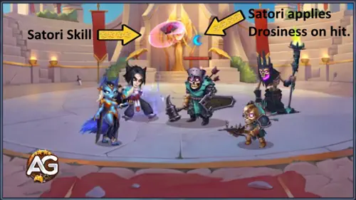
Entwicklungspriorität: Hoch – Hervorragend, um Gegner dauerhaft geschwächt zu halten, besonders in langen Kämpfen.
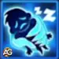
3. – Curse of the Wool (Fluch der Wolle)
Diese Fähigkeit wendet Schläfrigkeit auf nahe Gegner an, verursacht physischen Schaden, und wenn Gegner bereits 3 Stapel haben, verwandelt sie sie für 3 Sekunden in hilflose Schafe. Schafe können nicht angreifen und laufen davon. Der Nachteil ist, dass sie Schläfrigkeit-Stapel als Vorbereitung braucht, aber wenn das Timing stimmt, ist sie verheerend.
Fähigkeitsinfo
- Formel Physischer Schaden: (100% Physischer Angriff + 6.000)
- Anfangs-Abklingzeit: 7 Sekunden
- Abklingzeit: 15 Sekunden
- Schlüsselwörter: Debuff, Kontrolle
- Animationsverzögerung: 1 Sekunde
- Dauer: 3 Sekunden
- Bereich: 200
- Reichweite: 3000
- Treffer: 3
Formel mit Talisman des Schlummers
- Formel 1: Physischer Schaden: 136,758 (100% × 130,758 + 6,000)
Formel mit Talisman des Vergessens
- Formel 1: Physischer Schaden: 143,958 (100% × 137,958 + 6,000)
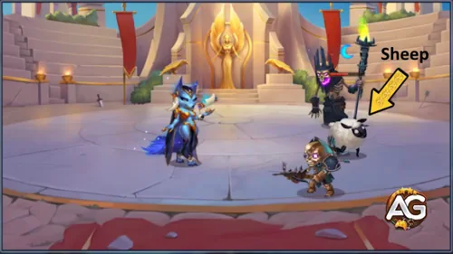
Entwicklungspriorität: Hoch – Gefährlich mit Vorbereitung, besonders nachdem Lullaby Veil Stapel platziert hat.
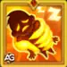
3. – Curse of the Wool (Verbesserte Fähigkeit) Legendäres Relikt: Stufe 20
Dieses legendäre Upgrade fügt mehr Schläfrigkeit-Stapel und zusätzlichen Schaden pro Stapel am Ziel hinzu. Es erleichtert das Auslösen der Schaf-Verwandlung und erhöht ihr Schadenspotenzial. Obwohl mächtig, ist es eher ein Spätspiel-Powerspike als ein Muss am Anfang.
Fähigkeitsinfo
- Formel Zusätzlicher Physischer Schaden pro Schläfrigkeit-Stapel: (20% Physischer Angriff + 600)
- Schlüsselwörter: Debuff, Kontrolle, Legendär
Formel mit Talisman des Schlummers
- Formel 1: Zusätzlicher Physischer Schaden pro Stapel: 26,751.6 (20% × 130,758 + 600)
Formel mit Talisman des Vergessens
- Formel 1: Zusätzlicher Physischer Schaden pro Stapel: 28,191.6 (20% × 137,958 + 600)
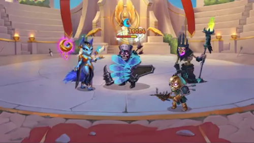
Entwicklungspriorität: Sehr hoch – Starke Verstärkung, aber erst nachdem ihre Hauptfähigkeiten aufgewertet sind.
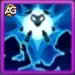
4. – Silence of the Sheep (Stille der Schafe)
Immer wenn Somna angegriffen wird, bestraft sie den Gegner mit 3 Stapeln Schläfrigkeit und verwandelt ihn sofort in ein Schaf. Obwohl nützlich, ist es reaktiv – es funktioniert nur, wenn sie getroffen wird. Es kann sie retten, ist aber nicht so zuverlässig wie ihre aktiven Fähigkeiten.
Fähigkeitsinfo
- Formel Zusätzl. Physischer Schaden: (10% Gesundheit + 12.000)
- Schlüsselwörter: Debuff, Kontrolle
- Bereich: 100
- Treffer: 3
Formel mit Talisman des Schlummers
- Formel 1: Additional Physischer Schaden: 114,991.8 (10% × 1,029,918 + 12,000)
Formel mit Talisman des Vergessens
- Formel 1: Additional Physischer Schaden: 96,841.8 (10% × 848,418 + 12,000)
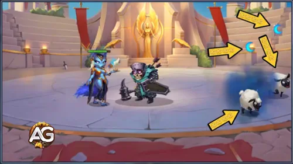
Entwicklungspriorität: Hoch – Handliches Verteidigungswerkzeug, aber situationsabhängig im Vergleich zu ihren offensiven Kontrollfähigkeiten.
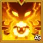
5. – Twilight Herd (Neue Fähigkeit) Legendäres Relikt: Stufe 1
Alle 15 Sekunden verwandelt Somna den am weitesten entfernten Gegner in ein Schaf, solange sie selbst nicht kontrolliert wird. Dies zielt auf gefährliche Hinterreihen-Gegner ab, was sehr effektiv sein kann, hängt aber stark davon ab, dass sie frei von Betäubungen oder Stille bleibt.
Fähigkeitsinfo
- Schlüsselwörter: Kontrolle, Legendär
- Abklingzeit: 15 Sekunden
- Dauer: 3 Sekunden
- Treffer: 3
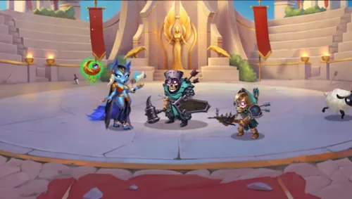
Entwicklungspriorität: Hoch – Situationsabhängig und nicht so zuverlässig wie ihre Kernfähigkeiten.
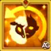
6. – Eternal Sleep (Neue Fähigkeit) Legendäres Relikt: Stufe 30
Dieses Spätspiel-Relikt reduziert die Wartezeit, bevor Gegner erneut in Schafe verwandelt werden können, von 10 Sekunden auf 5 Sekunden. Auch wenn es toll klingt, kommt es zu spät und ist eher ein „Luxus“-Upgrade, das etwas verbessert, was Somna bereits gut kann.
Fähigkeitsinfo
- Schlüsselwörter: Passiv, Legendär
- Effekt: Abklingzeit für die erneute Schaf-Verwandlung von 10 Sekunden auf 5 Sekunden reduziert.
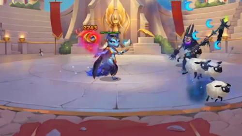
Entwicklungspriorität: Sehr hoch – Lustiges Upgrade, aber bis spät im Spielverlauf nicht benötigt.
Somna Realm-Fähigkeiten – Hero Wars Alliance
Somnas Realm konzentriert sich auf Speerträger und bietet Angriffsboni sowie mächtige passive Effekte. Ihre Realm-Fähigkeiten verbessern die Überlebensfähigkeit der Frontlinie und fügen Massenkontrolle in Realm-Kämpfen hinzu.
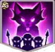
Jägerinstinkt (Stufe 5)
Reduziert den erlittenen Schaden durch Schützen um 20% und erhöht den Schaden der Speerträger um 10%. Diese Fähigkeit macht Somnas Speerträger offensiv gefährlicher und reduziert gleichzeitig die Bedrohung durch feindliche Schützen – ein starker taktischer Vorteil.
Fähigkeitsinfo
- Schützen-Schadensreduzierung: 20%
- Speerträger-Schadenserhöhung: 10%
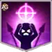
Wölfinnenziel (Stufe 5)
Angriffe der Speerträger haben eine 13%ige Chance, Gegner für 1 Runde zu betäuben. Dies fügt jeder Speerträger-Attacke eine Ebene der Massenkontrolle hinzu und macht Somnas Realm-Truppen in längeren Kämpfen unberechenbar und gefährlich.
Fähigkeitsinfo
- Betäubungschance: 13%
- Betäubungsdauer: 1 Runde
Bester Skin für Somna Hero Wars Alliance
Somna profitiert im frühen Spielverlauf am meisten von Physischem Angriff, da ihre Kernformeln für Schlafdruck und Rüstungsdurchschlag-Reduzierung direkt mit Physischem Angriff skalieren. Der neue Astral-Skin+ verändert jedoch ihre Spätspiel-PvP-Obergrenze: Der Basis-Astral-Skin gibt 10.650 Rüstungsdurchschlag, und die Skin+-Version verdoppelt dies auf 21.300, was Somna gegen Tanks und rüstungslastige Frontlinien deutlich gefährlicher macht.
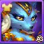
Standard-Skin
Bonus: Beweglichkeit +1135
• Physischer Angriff durch Beweglichkeit: +3.405
• Rüstung durch Beweglichkeit: +1135
Jeder Beweglichkeitspunkt gewährt zwei Punkte Physischen Angriff, einen Punkt Rüstung und einen zusätzlichen Punkt Physischen Angriff, wenn Beweglichkeit das Hauptattribut des Helden ist.
Entwicklungspriorität: Hoch – Steigert sowohl Schaden als auch etwas Verteidigung, gute Gesamtbalance.
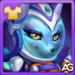
Weltraum-Skin
Bonus: Physischer Angriff +7095
Entwicklungspriorität: Sehr hoch – Erhöht Somnas Gesamtschadenspotenzial erheblich und verbessert ihre Kontroll- und Burst-Effizienz im Kampf direkt.
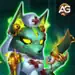
Dämonischer Skin
Bonus: Rüstung +10650
Entwicklungspriorität: Mittel – Bietet Überlebensfähigkeit, hat aber weniger Einfluss auf ihre Hauptrolle als Kontroll- und Schadensheldin.
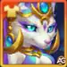
Astral-Skin+ (Skin+)
Der Astral-Skin+ ist Somnas neuer Premium-PvP-Skin. Der Basis-Astral-Skin gibt Rüstungsdurchschlag +10.650, und sobald du das Skin+-Upgrade erhältst, wird dieser Bonus effektiv auf +21.300 Rüstungsdurchschlag verdoppelt.
- Rüstungsdurchschlag (Astral-Basis): +10.650
- Rüstungsdurchschlag (Astral-Skin+): +21.300
Entwicklungspriorität: Extrem hoch für Endgame-PvP – Dieser Skin erhöht nicht die Formeln von Lullaby Veil oder Drowsy Blessing, da diese mit Physischem Angriff skalieren. Was er bewirkt, ist dass Somnas physischer Schaden gegen gepanzerte Gegner viel härter trifft, was ein großes Upgrade für Curse of the Wool, ihren Schaf-Nachdruck und jeden Kampf ist, in dem die feindliche Frontlinie auf Rüstung zum Überleben angewiesen ist. In der Praxis verwandelt es Somna von reiner Kontrolle in eine Kontrollheldin, die auch Tanks viel konsistenter bestrafen kann.
Alexandre Tipps: Von der Stärke her ist dies Somnas größter Spätspiel-PvP-Spike, aber es ist auch eines ihrer am schwersten zu erreichenden Upgrades. Du musst das Spiel des Sehers einmal besiegen, um den Basis-Astral-Skin freizuschalten, und fünfmal, um den Skin+ zu sichern – was es teuer und schwierig macht. Für Free-to-Play-Spieler ist der realistische Langzeitweg, darauf zu warten, dass der normale Skin später kostenlos erhältlich wird, und dann zu hoffen, dass der Skin+ irgendwann in der Heldentruhe erscheint, was sehr lange dauern kann.
Somna Artefakt-Entwicklungspriorität Hero Wars Alliance
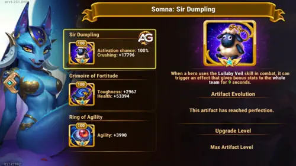
Somnas Waffenartefakt gewährt einen mächtigen teamweiten Vernichtungsbonus, wenn ihr Ultimate aktiviert wird, und verstärkt den gesamten physischen Schadensoutput.
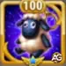
1. – Waffenartefakt: Sir Dumpling
Der Vernichtungsbonus von Somnas Waffenartefakt erhöht alle Arten ausgehenden Schadens Physisch, Magisch und Rein – gegen Gegner mit niedrigem Leben. Dies macht sie besonders synergetisch mit Burst-Schadensverursachern wie Folio and Satori, sodass dein Team geschwächte Gegner effektiver erledigen kann, wenn ihr Ultimate den Artefakteffekt aktiviert.
Entwicklungspriorität: Sehr hoch – Ihr Hauptbeitrag zum Team dreht sich darum, deine gesamte Frontlinie oder DPS-Reihe mit diesem Artefakt zu stärken.

2. – Buchartefakt: Grimoire der Stärke
Dieses Artefakt erhöht Somnas Gesundheit +53394 und Zähigkeit +2967. Zähigkeit reduziert allen erlittenen Schaden, wenn ihre LP niedrig sind – und hilft ihr, lange genug zu überleben, um ihre Kontrollfähigkeiten immer wieder einzusetzen.
Entwicklungspriorität: Hoch – Hält sie in kritischen Momenten länger am Leben, besonders gegen Burst-Schadensverursacher wie Kayla. Großer defensiver Wert in PvP und PvE.

3. – Ringartefakt: Beweglichkeitsring
Dieses Artefakt erhöht Somnas Basis-Beweglichkeit, was ihren physischen Angriff leicht steigert und etwas mehr Rüstung gibt. Es trägt zu den Gesamtwerten bei, beeinflusst aber nicht direkt ihre Kontrollstärke.
Entwicklungspriorität: Mittel – Ein solides Langzeit-Upgrade für die Gesamtleistung, sollte aber zuletzt kommen, da es ihre Kernfähigkeiten wie Schlaf oder Verwandlung nicht verstärkt.
Somna Glyphen-Entwicklungspriorität
Die Glyphen von Somna in Hero Wars Alliance steigern ihre Überlebensfähigkeit und ihr Konterpotenzial. Hier ist die wahre Glyphen-Priorität erklärt.

1. – Physischer Angriff +8340:
Physischer Angriff erhöht direkt den Schadensoutput von Somnas aktiven Fähigkeiten, insbesondere ihrer ersten und ultimativen Fähigkeit. Die Priorisierung dieser Glyphe stellt sicher, dass sie eine ernsthafte offensive Bedrohung bleibt, besonders gegen Helden wie Kayla.
Entwicklungspriorität: Hoch – Schlüssel zur Maximierung ihres Burst-Schadens und Drucks auf Hinterreihen-Ziele.

2. – Gesundheit +122800:
Diese Glyphe verbessert Somnas Überlebensfähigkeit in langwierigen Kämpfen. In Kombination mit ihrem Zähigkeitswert und einem Heiler wie Guus gibt sie ihr mehr Zeit, Druck auszuüben und Gegner wie Kayla effektiv zu kontern.
Entwicklungspriorität: Hoch – Synergie mit Zähigkeit und teambasierten Ausdauer-Strategien.

3. – Zähigkeit:
Zähigkeit ist ein neuer und mächtiger Wert, der alle Schadensarten reduziert, wenn die Gesundheit des Helden niedrig ist. Diese Glyphe ist besonders wertvoll, um Somna in kritischen Momenten am Leben zu halten – perfekt für Comeback-Szenarien.
Entwicklungspriorität: Mittel – Einzigartiger Defensiv-Boost, sehr situationsabhängig, aber spielentscheidend bei richtigem Timing.

4. – Rüstung +12850:
Rüstung hilft, physischen Schaden zu reduzieren, besonders von Helden wie Kayla und anderen Assassinen. Da Zähigkeit jedoch bereits einen breiteren Schutz bietet, ist diese Glyphe weniger dringend früh zu maximieren.
Entwicklungspriorität: Mittel-Niedrig – Gute Verteidigung, aber weniger wirkungsvoll aufgrund überlappender Effekte mit Zähigkeit.

5. – Beweglichkeit +2110:
Beweglichkeit erhöht den physischen Angriff leicht und bietet geringe Rüstungsboni. Hilfreich, aber die Skalierung ist zu niedrig, um mit der Wirkung der anderen Glyphen mitzuhalten.
Entwicklungspriorität: Niedrig – Am wenigsten wirkungsvolle Glyphe für ihre aktuelle Kampfrolle.
Somna Talisman-Statistikvergleich – Hero Wars Alliance
Nachfolgend ein direkter Vergleich von Somnas Werten mit jedem voll ausgerüsteten Talisman. Verwende diese Tabelle, um genau zu sehen, wie jeder Talisman ihre Kampfleistung beeinflusst.
| Wert | Talisman of Slumber | Talisman of Oblivion |
|---|---|---|
| Intelligenz | 4,098 | 4,098 |
| Beweglichkeit | 17,630 | 15,630 |
| Stärke | 3,802 | 3,802 |
| Gesundheit | 1,029,918 | 848,418 |
| Physischer Angriff | 130,758 | 137,958 |
| Magischer Angriff | 27,045 | 27,045 |
| Rüstung | 52,881 | 50,881 |
| Magieabwehr | 11,778.9 | 11,778.9 |
| Zähigkeit | 9,927 | 13,927 |
| Rüstungsdurchschlag | 23.178 | 23.178 |
| Vernichtung | 1,564 | 1,564 |
Wichtige Unterschiede: Der Talisman des Schlummers bietet deutlich mehr Gesundheit (+181.500) und Beweglichkeit, wodurch Somna widerstandsfähiger wird und ihre Silence of the Sheep-Formel verstärkt wird (die mit Gesundheit skaliert). Der Talisman des Vergessens gibt mehr Physischen Angriff (+7.200) und Zähigkeit, was den Schadens- und Debuff-Output ihrer anderen Fähigkeiten erhöht.
Somna Talisman-Guide Hero Wars Alliance
Talisman des Schlummers
Im Gegensatz zu Skins, die passive Boni unabhängig davon gewähren, welcher ausgerüstet ist, liefert nur der ausgerüstete Talisman seine Werte im Kampf. Die Wahl des richtigen Talismans kann daher einen großen Einfluss auf die Leistung haben.
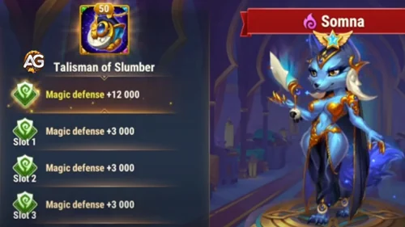
Somna Talisman des Schlummers – ist sehr gut für sie geeignet. Er erhöht ihre maximale Gesundheit erheblich, was ihre Widerstandsfähigkeit gegen alle Schadensarten verbessert: physisch, magisch und rein. Dies macht ihn zu einer starken Wahl, um sie lange genug am Leben zu halten, damit sie Verbündete unterstützen und ihr flächenbasiertes Ultimate einsetzen kann.
|
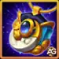 Talisman of Slumber |
Hauptwert |
|---|---|
|
Beweglichkeit |
+2.000 Beweglichkeit Jeder Punkt Beweglichkeit gewährt: – 2 Punkte Physischen Angriff; – 1 Punkt Rüstung; – +1 zusätzlichen Punkt Physischen Angriff, wenn Beweglichkeit das Hauptattribut des Helden ist. |
| Slot 1 | Slot 2 | Slot 3 | Gesamter Reroll-Bonus |
|---|---|---|---|
|
Gesundheit +60.500 |
Gesundheit +60.500 |
Gesundheit +60.500 |
Gesundheit +181.500 |
- Gesamt für die 3 Nebenslots: Gesundheit +181.500 (60.500 x 3)
- Der kombinierte Gesundheitsboost verbessert Somnas Überlebensfähigkeit gegen alle Schadensarten erheblich.
- Dies ist ideal für Setups, in denen Somna lange genug überleben muss, um ihr Ultimate zu aktivieren und das Team mit ihrem Waffenartefakt-Effekt zu stärken.
Talisman des Vergessens – VIP
Der Talisman des Vergessens macht Somna im Kampf deutlich widerstandsfähiger dank seines Zähigkeit-Hauptwerts, der ihr hilft zu überleben, wenn sie dem Tod nahe ist.
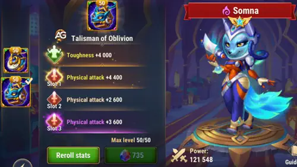
Zähigkeit:
🔸 Reduziert allen eingehenden Schaden von Gegnern, wenn die Gesundheit des Helden niedrig ist.
🔸 Gilt für alle Schadensarten (physisch, magisch und rein) außer Gesundheitsverlust durch Fähigkeiten von Verbündeten.
🔸 Der Schadensreduzierungsprozentsatz wird durch die Formel bestimmt:
(Zähigkeit / (Zähigkeit + Hauptwert des Gegners)) × 100%
|
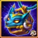 Talisman of Oblivion |
Main Stat |
|---|---|
|
Zähigkeit |
+4.000 Zähigkeit |
| Slot 1 | Slot 2 | Slot 3 | Gesamter Reroll-Bonus |
|---|---|---|---|
|
Physischer Angriff +4.400 |
Physischer Angriff +4.400 |
Physischer Angriff +4.400 |
Physischer Angriff +13.200 |
Die Physischer Angriff-Slots verstärken alle offensiven und Kontrollfähigkeiten von Somna und lassen sie mehr Schaden verursachen, während sie Gegner schwächt, indem sie deren physischen Angriff und Rüstungsdurchschlag senkt. Diese Kombination macht sie in langwierigen Kämpfen sowohl zäher als auch tödlicher.
Hauptwert-Slot: Zähigkeit +4.000
Reroll-Slots: Physischer Angriff +4.400 pro Slot (×3)
Wie man Somna kontert – Hero Wars Alliance

Iris kontert Somna, indem sie ihre debuffbasierten Mechaniken ausnutzt. Ihre „Seelenverbrennung“-Fähigkeit verursacht Schaden basierend auf der Anzahl der debufften Gegner und kann Gegner mit niedrigem Leben hinrichten – eine perfekte Antwort auf Somna, die oft lange Kämpfe führt. Zusätzlich reduziert ihre „Geheimnisvoller Pakt“-Fähigkeit den physischen und magischen Angriff von Gegnern, wenn diese Debuffs oder Markierungen anwenden, was Somnas Nützlichkeit und Überlebensfähigkeit in Teamkämpfen weiter schwächt.
Soleil ist dank seiner starken Anti-Kontroll-Mechaniken äußerst effektiv gegen Somna. Mit „Zeichen des alten Gottes“ bestraft Soleil Gegner, die auf Kontrolleffekte setzen – wie Somna – durch schweren Bonusschaden. Sein „Segen des alten Gottes“ verstärkt den Schaden und die Heilung der Verbündeten, der mit jeder Kontrollfähigkeit der Gegner weiter skaliert. Dies mildert nicht nur Somnas Druck, sondern verwandelt ihre Kontrolle in einen Vorteil für Soleils Team.
Somna Synergien in Hero Wars Alliance
Somna hat starke Synergien mit Helden, die entweder Kontrolleffekte wie Schlaf anwenden oder von debufften Gegnern profitieren. Nachfolgend die besten Synergie-Picks für Somna, basierend darauf, wie ihre Fähigkeiten Somnas Effektivität im Kampf verstärken.
Folios Alte Schriften immobilisieren Gegner und verursachen verzögerten Flächenschaden, was Somna Zeit gibt, ihre schlafbasierten Fähigkeiten ohne Unterbrechung zu aktivieren. Die Immobilisierung stellt auch sicher, dass Gegner gruppiert sind, was Somnas AoE-Wirkung erhöht.
Lian verzaubert Gegner und versetzt sie in Schlaf, ohne sie mit ihren eigenen Angriffen aufzuwecken – sie bereitet ideale Massenkontrolle vor, die nahtlos mit Somnas schlafabhängigen Fähigkeiten zusammenarbeitet. Ihre Kombination macht es feindlichen Teams schwer, sich zu erholen.
Satori wendet Fuchsfeuer-Markierungen an, während Gegner handlungsunfähig sind – einschließlich der von Somnas Schlaf Betroffenen. Dies führt zu massivem magischen Nachfolgeschaden, wenn die Markierungen detonieren, und gibt dem Duo enormes Burst-Potenzial gegen buff-lastige Teams.
Beste Teams für Somna Hero Wars Alliance
Top-Verteidigungsteams für Somna
- Rufus, Satori, Somna, Folio, Lian
- Rufus, Satori, Somna, Folio, Faceless
- Tempus, Iris, Somna, Polaris, Octavia
- Tempus, Soleil, Iris, Somna, Peech
- Soleil, Iris, Somna, Polaris, Peech
- Tempus, Iris, Somna, Polaris, Peech
- Kayla, Tempus, Soleil, Somna, Aidan
- Kayla, Tempus, Guus, Somna, Aidan
- Kayla, Guus, Soleil, Somna, Aidan
- Julius, Kayla, Somna, Peech, Aidan
- Kayla, Dante, Somna, Aidan, Octavia
- Kayla, Dante, Tempus, Aidan, Octavia
Top-Angriffsteams für Somna
- Lian, Folio, Somna, Satori, Rufus
- Faceless, Folio, Somna, Satori, Rufus
- Octavia, Polaris, Somna, Iris, Tempus
- Peech, Somna, Iris, Soleil, Tempus
- Peech, Polaris, Somna, Iris, Soleil
- Peech, Polaris, Somna, Iris, Tempus
- Aidan, Somna, Soleil, Tempus, Kayla
- Aidan, Somna, Guus, Tempus, Kayla
- Aidan, Somna, Soleil, Kayla, Julius
- Aidan, Peech, Somna, Kayla, Julius
- Octavia, Aidan, Somna, Dante, Kayla
- Octavia, Aidan, Somna, Tempus, Kayla
Fazit – Somna Helden-Guide
Somna ist eine starke Ergänzung für Hero Wars Alliance und bietet starke Massenkontrolle, störende Schlafmechaniken und Synergien mit Helden wie Lian, Satori und Folio. Der neue Astral-Skin+ hebt ihre PvP-Obergrenze erheblich an: Er verstärkt ihre Debuff-Formeln nicht direkt, aber 21.300 Rüstungsdurchschlag macht ihren physischen Druck gegen gepanzerte Teams deutlich relevanter, besonders in der Arena und im Gildenkrieg. Für die meisten Spieler bleiben Physische-Angriff-Skins die praktischste Erstinvestition, aber wenn du jemals den Astral-Skin+ sichern kannst, wird Somna zu einer deutlich tödlicheren Anti-Frontlinien-Kontrollheldin.
Videovorschläge:
Entdecke neue Fähigkeiten mit unseren vorgestellten Helden!


Hinterlasse deine Meinung!
Hat dir unser Guide über Somna für Hero Wars Mobile gefallen? Gibt es etwas, das du nicht verstanden hast oder Änderungen vorschlagen möchtest? Wir laden dich ein, dich in unserem Kommentarbereich auf der Alexandre Games Blog-Seite zu beteiligen. Teile gerne deine Meinung, kläre deine Fragen und teile deine Vorschläge.
Klicke auf den Button unten, um zu starten: